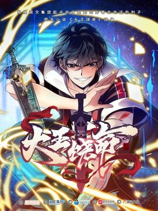
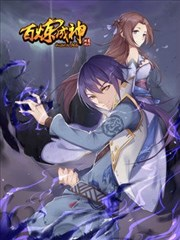

| 漫畫簡介 | ||
|---|---|---|
|  | 大王饶命 | 靈氣復甦後，全民抓緊每一絲靈氣修行，只有呂樹，背靠負面情緒值系統，懟人就變強！他只想保護好妹妹，但時代洪流避無可避，那也只好……順便懟懟人，成為最強！那麼，準備好了嗎，呂樹“大魔王”來嘍~ |
|
我獨自升級 | 10年前，世界與其他次元連接的“門”被打開，各種魔物不斷出現，於是乎能力各異的獵魔者也隨之出現，被成為“獵人”。程肖宇是一名實力最弱的E級獵人，在一次挑戰任務中，遇到了可怕的隱藏挑戰。生死存亡之際，他居然獲得了升級系統！在系統的利用下，他能成為最強獵人嗎? |
|  | 百炼成神 | 羅徵為救妹妹羅嫣，踏上追求武道之極的百煉成神之路。當他以為通過自己的努力可以讓妹妹羅嫣重獲自由，真相離他越來越近，拯救妹妹之路卻越來越艱難。 |